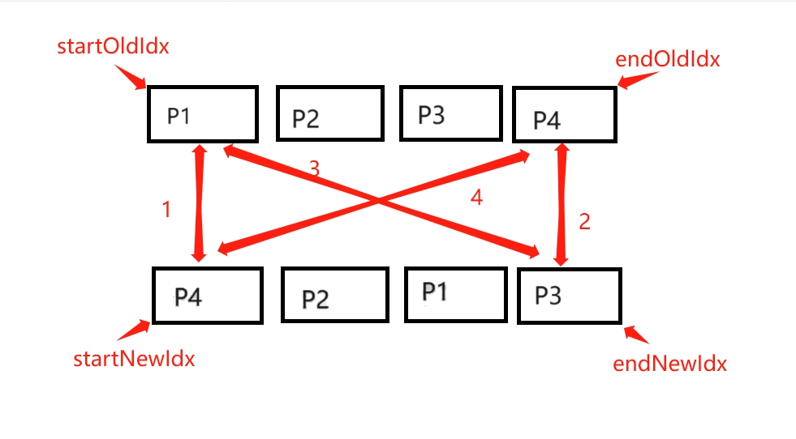

diff算法 -- 双端对比
前言
diff算法，全称为difference算法，是一种用于比较和查找文本、源代码或任何字符串之间差异的算法。前端中在react、vue等中使用diff算法对比虚拟DOM树，进行虚拟DOM树的更新，进而完成真实DOM的更新，达到更新页面的效果。在vue2中使用的就是双端diff算法。
什么是双端对比？
双端对比，即双端diff算法，一种同时对新旧两组子节点的两个端点进行比较的算法。
但就从上面这句话来看，可能有点抽象，可参考下面这张图片

双端对比的简单实现
理想情况下的实现
为了便于理解，我们先从理想情况下看怎么实现双端对比。上面提到了，双端对比需要从新旧两组子节点进行对比，所以需要四个索引值来分别指向新旧两组子节点的端点。本文中将其分别命名为newStartIdx, newEndIdx, oldStartIdx, oldEndIdx，由于本文仅是为了说明双端算法，为了便于理解说明，假定所有的节点均为数字数组中的元素，并进行比较，从代码层实现如下：
1 | // newStartIdx 新数组的起始索引 |
那么下面我们来看一下双端算法的具体实现，根据上面的图片，我们将对应数组元素转化为数字：
[1, 2, 3, 4]
[4, 2, 1, 3]
按照图片中标识的先后顺序，我们可以得出下面的步骤：
- 比较oldStartIdx和newStartIdx指向的元素，元素不同，不可复用，什么都不用做
- 比较oldEndIdx和newEndIdx指向的元素，元素不同，不可复用，什么都不用做
- 比较oldStartIdx和newEndIdx指向的元素，元素不同，不可复用，什么都不用做
- 比较oldEndIdx和newStartIdx指向的元素，元素相同，可复用，需要移动元素
代码层面变动如下：
1 | let oldStartIdx = 0, newStartIdx = 0 |
进行上面的操作之后，数组变更为：
[4, 1, 2, 3]
[4, 2, 1, 3]
这时，oldArray的起始指向1，结束指向3；newArray的起始指向2，结束指向3。接下来重复进行上面的比对过程即可，由于是重复进行的逻辑，所以把对比的过程封装到一个while循环中：
这里需要注意，while循环的判断条件是起始索引小于结束索引，表明数组还没对比完，但这里会引申出其他问题，具体什么问题等一下再说，先往下看
1 | let oldStartIdx = 0, newStartIdx = 0 |
上面的数组经过一轮对比之后，重复双端对比的顺序：
- 比较oldStartIdx和newStartIdx指向的元素，元素不同，不可复用，什么都不用做
- 比较oldEndIdxx和newEndIdx指向的元素，元素相同，但由于都处于数组尾部，不需要移动，所以仅更新索引值即可（PS：在具体的代码处理中根据需要自己添加处理，本文仅作双端对比的说明）
所以，代码变更如下：
1 | let oldStartIdx = 0, newStartIdx = 0 |
这时，oldArray的起始指向1，结束指向2；newArray的起始指向2，结束指向1。接下来，进行剩余部分的对比：
- 比较oldStartIdx和newStartIdx指向的元素，元素不同，不可复用，什么都不用做
- 比较oldEndIdxx和newEndIdx指向的元素，元素不同，不可复用，什么都不用做
- 比较oldStartIdx和newEndIdx指向的元素，元素相同，可复用，需要更新索引和移动元素
代码变更如下：
1 | // .... |
上面对比结束之后，仅剩余一个位置需要对比，由于该位置的元素相同，所以仅需要更新索引即可
1 | // .... |
经过上面的对比之后，新旧两组数组已经变为拥有相同元素的数组。同时相信大家经过上面这个对比的过程之后，已经对双端对比的过程有了一个基本的了解，但是上面的例子中使用的数组实际上是有一定特殊性的，新旧两个数组拥有相同的元素，只是顺序不一样而已，而且数组的四个索引位置的数据刚好能满足将这个对比进行下去的条件，这只是一种理想情况，但在实际使用中，这种情况可能很少见，比如四个索引位置的元素各不相同怎么办？下面我们来看一下非理想情况下时，双端对比的处理
和上面类似，我们也用例子进行说明：
现有两个较多元素的新旧数组：
[6, 8, 1, 2, 3, 4, 5, 7]
[4, 2, 7, 1, 4, 3, 5, 8]
从上面的例子可以看出初始时的四个索引位置对应的元素都不相同，针对这种情况，双端对比的处理方式是：查找新元素的首位在旧数组中的对应位置
- 能够找到新元素的首位在旧数组中的对应位置
- 找不到新元素的首位在旧数组中的对应位置根据上面针对元素的查找，代码变更为：
1
2
3
4
5
6
7
8
9
10
11
12const index = oldArray.findIndex(item => item === newStart);
// 能够找到新元素的首位在旧数组中的对应位置
if (index > -1) {
// ......
// 为了保证后续不在对该元素进行对比，将其设置为null
oldArray[index] = null;
newStart = newArray[++newStartIdx];
} else {
// 找不到新元素的首位在旧数组中的对应位置
// 因为oldArray中没有newStart对应的元素，因此需要自己创建一个新的元素然后将元素添加到数组中，具体代码不在添加，可根据实际需要添加
newStart = newArray[++newStartIdx];
}上面的代码保证了非理想情况下的双端对比能够进行对比处理，但是我们在实际应用双端对比进行处理时，上面的while条件往往会产生问题，如果新旧数组的长度不一致，比如下面这种，那么当短数组对比结束时，长数组还没对比完成，但上面的代码根据while条件实际上已经不能再继续执行，这时候就需要做针对处理，保证对比的正确性1
2
3
4
5
6
7
8
9
10
11
12
13
14
15
16
17
18
19
20
21
22
23
24
25
26
27
28
29while(oldStartIdx <= oldEndIdx && newStartIdx <= newEndIdx) {
if (oldStart === null) {
oldStart = oldQueue[++oldStartIdx];
} else if (oldEnd === null) {
oldEnd = oldQueue[--oldEndIdx];
} else if (oldStart === newStart) {
oldStart = oldArray[++oldStartIdx];
newStart = newArray[++newStartIdx];
} else if (oldEnd === newEnd) {
oldEnd = oldArray[--oldEndIdx];
newEnd = newArray[--newEndIdx];
} else if (oldStart === newEnd) {
oldStart = oldArray[++oldStartIdx];
newEnd = newArray[--newEndIdx];
} else if (oldEnd === newStart) {
oldEnd = oldArray[--oldEndIdx];
newStart = newArray[++newStartIdx];
} else {
const index = oldArray.findIndex(item => item === newStart);
if (index > -1) {
// ......
oldArray[index] = null;
newStart = newArray[++newStartIdx];
} else {
// ......
newStart = newArray[++newStartIdx];
}
}
}
[6, 13, 8, 1, 2, 10, 9, 11, 12, 3, 4, 5, 7]
[4, 2, 7, 1, 4, 3, 5, 8]
从while的条件中可以看出，实际上可以分为两种情况进行处理：
- 旧数组对比结束，新数组未结束
将新数组中剩余未对比的元素移动到新数组的最新结束元素后 - 新数组对比结束，旧数组未结束
将旧数组中剩余元素删除
使用双端对比的前提是需要双端连续可持续跳跃，所以双向链表可用